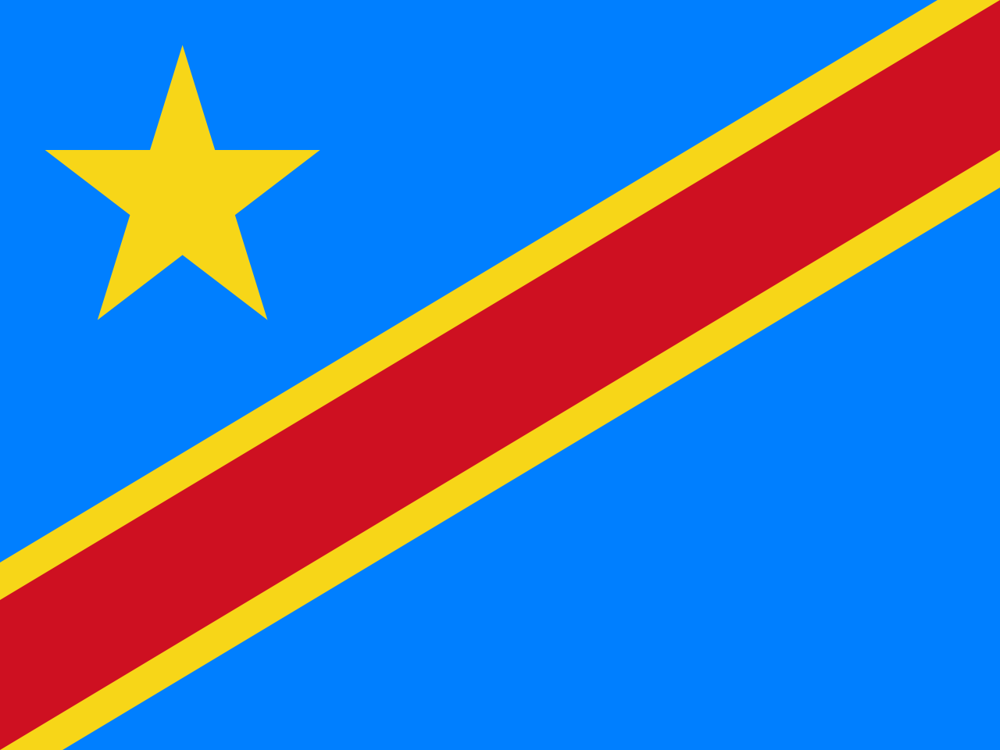

A primeira bandeira, Repulicana Foi em 1960 - 1963 O presidente Mubutu Fez 32 anos no mandato dele.
A Segunda bandeira foi em 1963 - 1971
A Terceira bandeira,Entrou O nome do pais mudou para ZAIRE em 1971 - 1997

de 1997 - 2006 O pais voltou e se chamar a Repubica democratica do congo e a primeira bendeira voltou